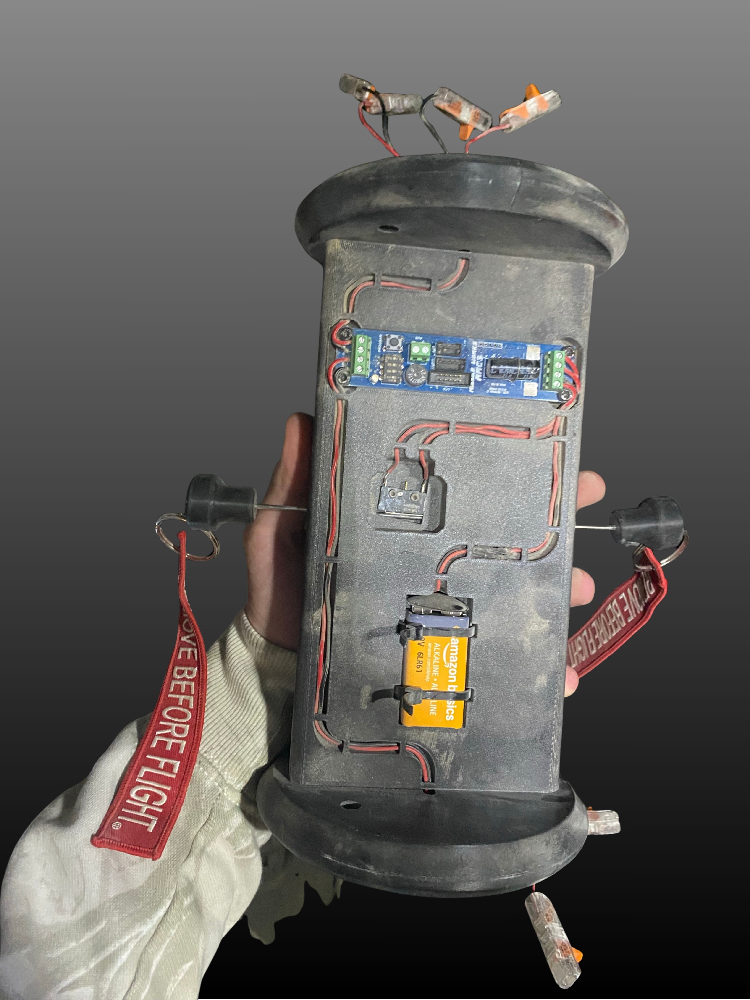
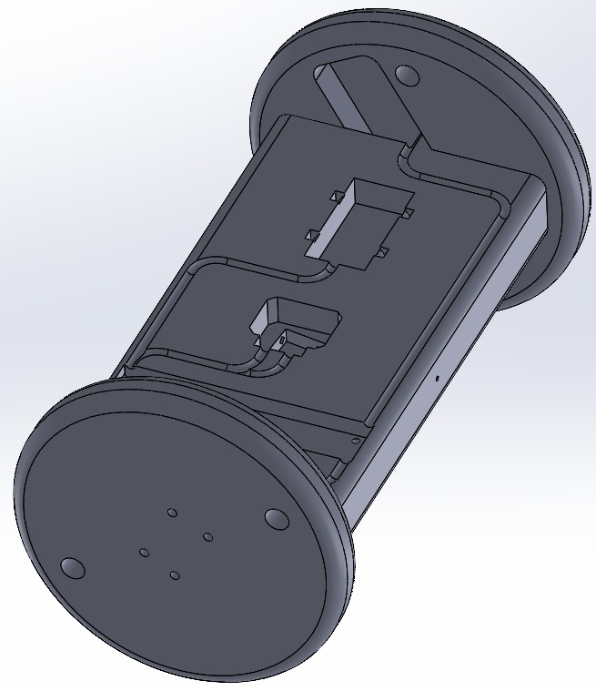
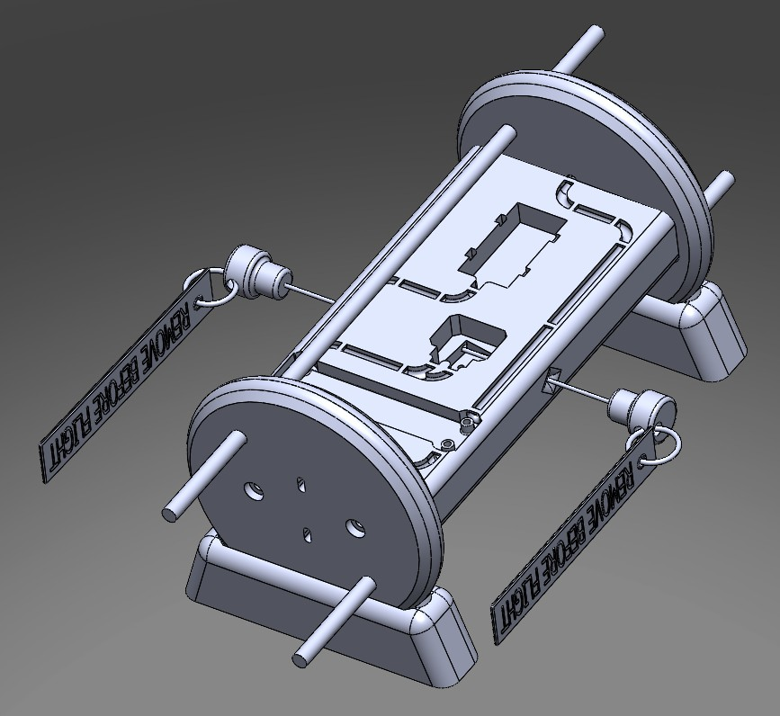
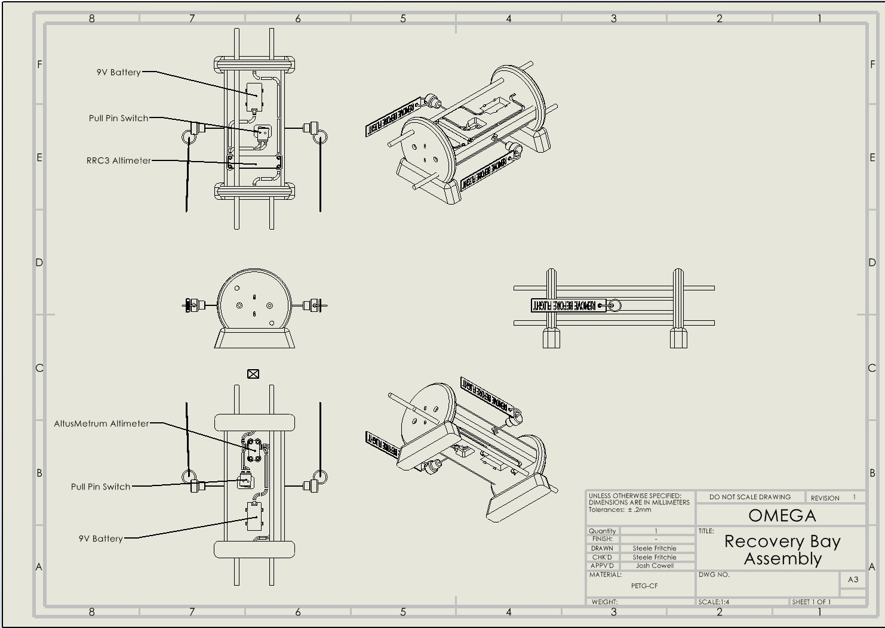
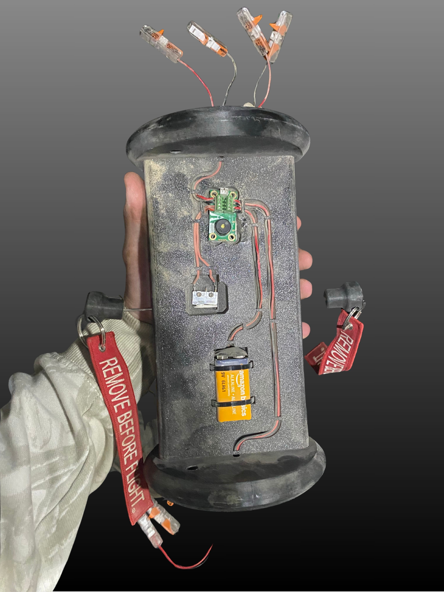

Engineering Challenge
Last year's communication systems suffered from RF signal interference resulting from several possible sources. This called for a redesign of avionics systems this year. All components on the LORA mesh network were moved to the fiberglass nosecone section which allows RF transparency. Last year's design of the recovery bay utilized screw switches to activate altimeters which suffered from reliability issues and were difficult to operate. Rotational and G forces caused the screws to rotate in flight and compromise the system's reliability. We were also made aware that IREC judges prefer having two different branded altimeters for redundancy.
The Solution & Iterative Design
Integrating the major design decisions determined from last year's model resulted in a sleek, intuitive design which makes it easy to understand component and wire pathing, allowing for easy access and maintenance. The structural components were custom modeled using SolidWorks and printed using high-durability PETG-CF filaments to combat high G-forces, prevent moisture ingress, and ensure structural integrity in hot Texas temperatures at competition. The electronics include altimeters (One Missileworks RRC3 and One Altus Metrum EasyMini), pull pins to replace last year's screw switches, and batteries which activate mechanical separation stages for Omega's dual-deployment recovery system.



A engineering drawing, concept, and the final SolidWorks assembly model of the recovery bay are shown above.

Pictures of each side of the recovery bay are shown above.
Flight Performance & Results
The system has performed well in several test flights. During our Sub-Scale launch to 5,000 feet the system deployed both the main and drogue parachutes at apogee, when main is supposed to be deployed at 1,200 feet. This was a result of using the FeatherWeight BlueRaven altimeter for the first time. The mobile app was not analyzed with enough depth and we missed a setting which caused the misfire. At our 10,000 foot FullScale launch the system failed to deploy one of the main chute charges. This was a result of people not familiar with the electronic systems its housing coupler while attempting to attach the main chute to the reccovery yoke located on a bulkhead, which when assembling cut a wire to the chargewell, resulting in the failed charge deployment. The electronic system was properly configured and it was not an avionics issue. At competition the coupler was assembled by me and worked exactly as intended during the competition launch, where all four charges deployed at appropriate altitudes.